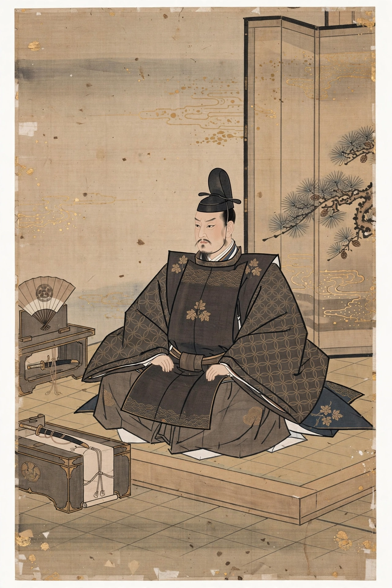

Ashikaga Takauji
| Ashikaga Takauji | |
|---|---|
 | |
| Shōgun | 1338–1358 |
| Born | 1305 |
| Died | 7 June 1358, Kyoto |
| Clan | Ashikaga (Minamoto) |
| Successor | Ashikaga Yoshiakira |
Ashikaga Takauji (足利 尊氏, 1305 – 7 June 1358) was the first shōgun of the Ashikaga shogunate (Muromachi bakufu), which he founded in 1338 and which ruled Japan until 1573. Originally a general of the Kamakura shogunate, he turned against it and helped Emperor Go-Daigo destroy the Hōjō regency, then broke with the emperor and established his own military government in Kyoto.
Early career and the Kenmu Restoration
Takauji was a descendant of the Seiwa Genji line of the Minamoto clan. In 1333 the Kamakura bakufu sent him to suppress Go-Daigo's rebellion; instead he defected, seized Kyoto for the emperor, and enabled the destruction of Kamakura by Nitta Yoshisada. During the Kenmu Restoration he was richly rewarded but grew dissatisfied with the court's distribution of honours.
Founding the shogunate
In 1335 Takauji crushed the Nakasendai Rebellion of Hōjō Tokiyuki and, refusing to return to court control, occupied Kamakura. Defeated by imperial loyalists, he retreated to Kyushu, rebuilt his forces, and won the decisive Battle of Minatogawa (1336), where Kusunoki Masashige was killed. He entered Kyoto, installed Emperor Kōmyō of the rival "Northern Court," and in 1338 received the title of sei-i taishōgun. Go-Daigo's escape to Yoshino produced the Nanboku-chō period of rival imperial courts, lasting until 1392.
Later years
Takauji shared power uneasily with his brother Ashikaga Tadayoshi; their conflict, the Kannō disturbance (1350–1352), split the regime and briefly drove Takauji to submit to the Southern Court. A patron of Zen Buddhism and of the monk Musō Soseki, he founded Tenryū-ji temple partly to appease Go-Daigo's spirit. He died in Kyoto in 1358 and was succeeded by his son Yoshiakira.
See also
This article is a recreation written from memory for the muse-webcrawl project.